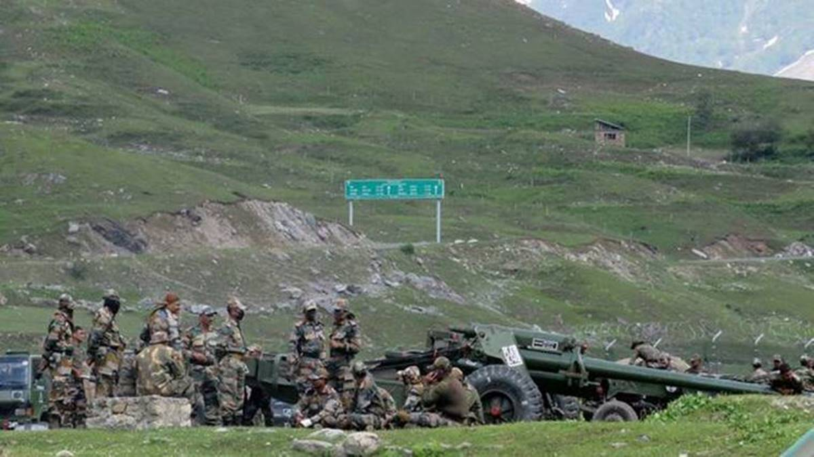

India China Galwan Valley standoff three years – Revisited

On the evening of June 15, 2018, an incident occurred that shook the entire world. The India China Galwan Valley Standoff between India and China resulted in the death of 20 Indian soldiers, including a commanding officer. While China also suffered casualties, the country remained tight-lipped about the numbers. It has been three years since the incident, and tensions between the two countries continue to simmer.
Case Studies
The India China Galwan Valley Standoff is not an isolated incident. Tensions between the two countries have been brewing for decades, with both sides blaming each other for various provocations. Some of the key incidents that have taken place over the years include:
- 1962 Sino-Indian War: This was a major war between the two countries that took place in 1962. India suffered a humiliating defeat, with China capturing a large part of the disputed territory in the Aksai Chin region.
- 2017 Doklam Standoff: In 2017, Indian troops entered Doklam, a disputed plateau between China and Bhutan. China responded with its troops, leading to a standoff that lasted for 73 days.
- 2020 Ladakh Standoff: The most recent standoff between the two countries began in May 2020, with both sides accusing each other of violating the Line of Actual Control. This resulted in violent clashes that left several soldiers dead.
While these incidents may appear as isolated, they are all a part of a larger pattern of conflict and tension between India and China.
Lessons Learned
So, what can we learn from the India China Galwan Valley Standoff? Here are three key takeaways:
- The Importance of Diplomacy: The India China Galwan Valley Standoff highlights the importance of diplomacy in resolving conflicts between nations. While military might may be important, it is ultimately diplomacy that can help prevent war and resolve disputes before they escalate.
- The Need for Communication: Communication is key in preventing conflicts from escalating. The India China Galwan Valley Standoff was exacerbated by a lack of communication between the two sides. In order to prevent such incidents in the future, it is important for countries to establish open lines of communication and maintain constant dialogue.
- The Importance of International Cooperation: Finally, the India China Galwan Valley Standoff underscores the importance of international cooperation in resolving disputes. While India and China have been unable to resolve their differences thus far, it is important for the international community to play a role in mediating these disputes and pushing for a peaceful resolution.
Conclusion
The India China Galwan Valley Standoff is a grim reminder of the tensions and conflicts that exist between India and China. While the two countries have made some attempts to resolve their differences through diplomacy, much work still needs to be done. Ultimately, it is the responsibility of both nations to find a peaceful solution to their disputes in order to avoid future conflicts.
References
- https://www.bbc.com/news/world-asia-53061476
- https://www.dw.com/en/india-china-clashes-what-is-the-dispute-over-galwan-valley/a-53831997
- https://www.indiatoday.in/india/story/india-china-border-dispute-history-background-explainer-details-1685466-2020-06-17
Hashtags
#IndiaChinaGalwayStandoff #Diplomacy #Communication #InternationalCooperation #IndiaChinaTensions
SEO Keywords
India, China, Galway Valley, Standoff, Diplomacy, Communication, International Cooperation, India China Tensions, War, Conflict.
Article Category
Politics
Curated by Team Akash.Mittal.Blog
Curated by Team Akash.Mittal.Blog
Share on Twitter Share on LinkedIn